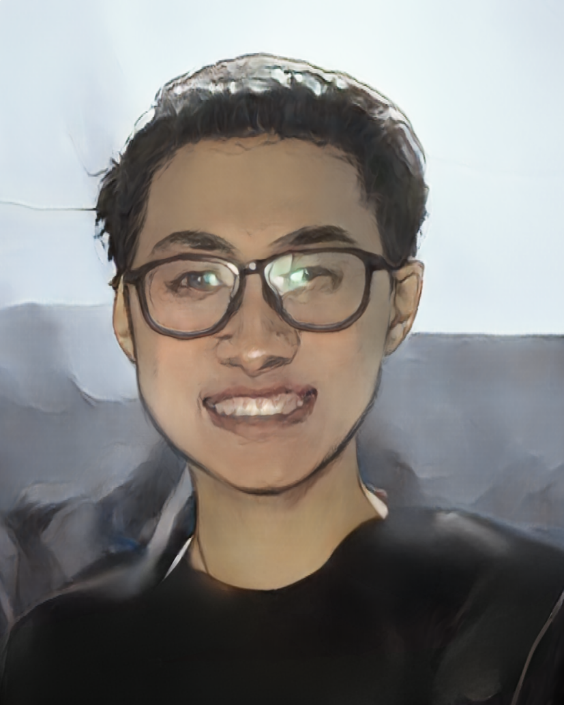

|
Hanchen Cui
I am a Ph.D. student in computer science at University of Minnesota Twin Cities, working with Prof.Karthik Desingh. Previously, I'm a researcher at Shanghai Qi Zhi Institute, where I work closely with Prof.Yang Gao at IIIS, Tsinghua University. Afterwards, I have a short visit at NUS, collaborating with Prof.Lin Shao
My research interest lies in robot learning and my long-term goal is to build a generalized robot that can accomplish long-horizon and complex tasks. To be mroe specific, I work on world models, representation learning, and foundation models assisted policy learning.
Email /
Scholar
|

|
Publications (representative papers are highlighted)
|
|
|
Fine-Tuning Hard-to-Simulate Objectives for Quadruped Locomotion: A Case Study on Total Power Saving
Ruiqian Nai, Jiacheng You, Liu Cao, Hanchen Cui, Shiyuan Zhang, Huazhe Xu, Yang Gao
submitted to ICRA 2025
project page /
pdf
We propose a data-driven framework for fine-tuning locomotion policies, targeting these hard-to-simulate objectives. Our framework leverages real-world data to model these objectives and incorporates the learned model into simulation for policy improvement.
|
|
|
A Universal World Model Learned from Large Scale and Diverse Videos
Hanchen Cui, Yang Gao
NeurIPS 2023, Foundation Models for Decision Making Workshop
pdf /
poster
We propose a generalizable world model pre-tained by large scale and diverse video dataset and then fine-tune the world model to obtain an accurate dynamic function in a sample-efficient manner.
|
|
|
A Universal Semantic-Geometric Representation for Robotic Manipulation
Tong Zhang*, Yingdong Hu*, Hanchen Cui,Hang Zhao, Yang Gao
CoRL 2023
project page /
arXiv
We present Semantic-Geometric Representation (SGR), a universal perception module for robotics that leverages the rich semantic information of large-scale pre-trained 2D models and inherits the merits of 3D spatial reasoning.
|
Modified version of template from here.
|
|
{kind=link}